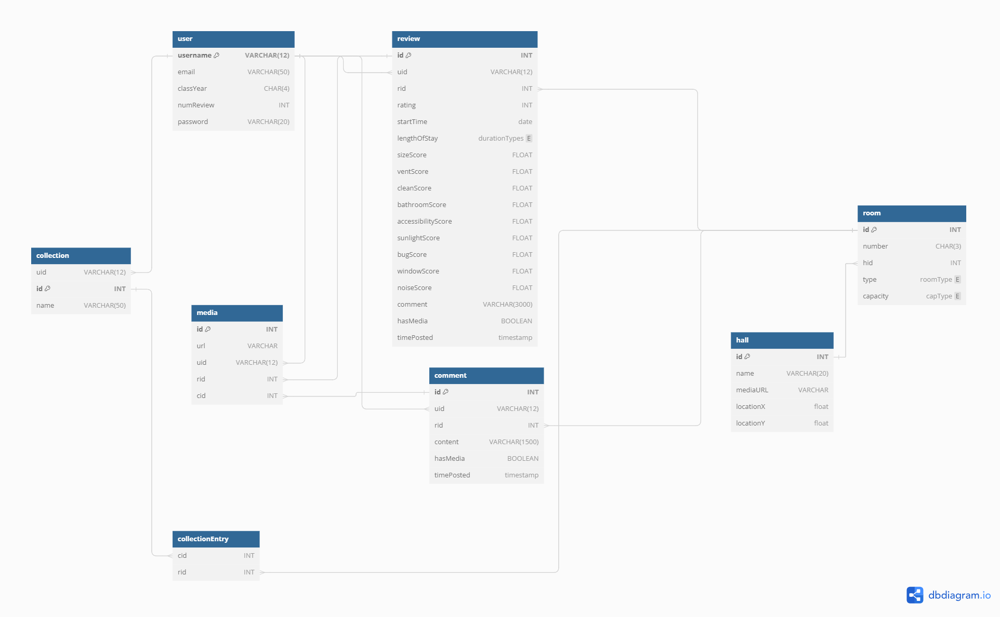

BACKGROUND
ROLE
Full-Stack Developer in a team of 4
TOOLS
Python
HTML/CSS
MySQL
Flask
Git
Overview
The Wellesley Evaluation Network for Dorm Information (WENDI) is a web app designed to streamline the housing selection journey. WENDI facilitates effortless navigation through campus housing options, enhanced by genuine peer reviews and data inputs from fellow students. This tool allows users to report and share insights about the rooms they and their peers have lived in, offering a rich source of real-world data and experiences. Students seeking room insights will find a wealth of information, while those wanting to share experiences have a platform to amplify their voices.
Problem Statement
We noticed that the current methods of finding dorm room information are unreliable and there isn't a centralized platform for students to find the information on. The main 2 alternatives are a Google Drive folder which contains outdated and inaccurate dorm building floor plans and asking in Wellesley FAQ, a Facebook group where students can ask about anything Wellesley-related. The Google Drive folder can be difficult to access and parsing through Wellesley FAQ posts is inconvenient and challenging.
Project Goals
Our goal was to build a web app that would solve the issue we identified and help future students.
DEVELOPMENT
Ideation + Prototyping
Before building our web app, we looked at what dorm information Wellesley FAQ users ask for. This helped us structure our database and narrow down on what features to include. Wellesley FAQ users frequently asked for images of specific dorm rooms and what the living experiences are. Keeping this in mind, we determined that a form with fixed input sections would be the best way to organize data. To visualize how we wanted to structure our SQL database, we created an ER diagram using dbdiagram.io.

We created our ________
Coding
As most of our code was developed asynchronously, we split features amongst team members. My responsibilities within this project included developing SQL queries to display a list of the rooms in a specific dorm building, change the list's display based on filters, and display the reviews and comments made on a room's page.
Reflection
All of the features we had planned on implementing for this project were completed. There were several features we considered building if we had more time. These features included "liking" a room and saving it to a room collection for users to look back at to find their favorite rooms.
The workflow of this project went fairly smoothly. A few challenges we encountered involved accidentally deleting our database and merge conflicts in Github.
When presented to students, we received positive feedback that this is a product our target audience would use if deployed.